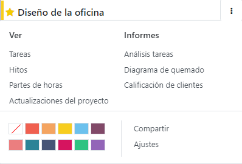
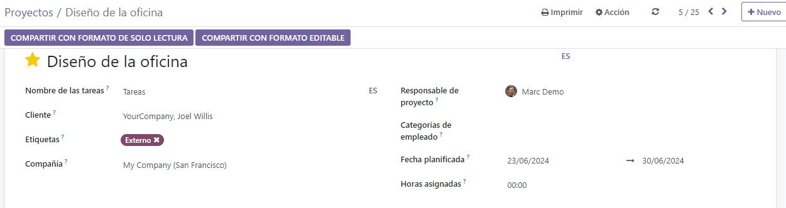

Project management¶
Odoo Project uses the Kanban project management system. This means all projects are broken down into tasks, which are categorized on a whiteboard according to what production phase they are in.
Did you know?
The word Kanban comes from Japanese and refers to the “visual board” management method.
Configuration¶
Open the Project app and click Create to start a new project. Enter a Name for your project and click Create Project.
You can customize your existing projects from the dashboard by clicking the drop-down toggle button (⋮) on your project’s card.
This enables a new menu divided into four parts:
View: see an overview of your project’s components, such as its Tasks, Milestones and Project Updates. Depending on which apps you have activated, more options may be available, such as Documents. All uploaded files can be found under this menu, as well as in the Documents app, under Projects;
Reporting: analyze your project’s progress and profitability through graphics and statistics;
Color: make a line of color appear on the left side of the card so that your project is more recognizable;
Settings: you can change the following:
the Name of the project;
the Name of the tasks found under that project;
the Customer for whom the project is intended;
the Tags used for filtering;
the Company responsible for the project;
the employee designated as Project Manager;
the Planned Date of the project;
the total Allocated Hours for that project.
Additionally, you can mark the project as Favorite, allowing you to find it using the My Favorites filter on the Kanban view;
Further settings are available under the Settings tab. Most of them are only available depending on the activated apps.
Scheduling activities¶
You can schedule activities (ex. Call, Meeting, etc.) per project by clicking on the clock icon on a project. Doing so opens a list with already scheduled activities and allows planning new activities by clicking + Schedule an activity. On the pop-up window, select the Activity Type, enter a Summary for that activity, a Due Date, and assign it to an employee. According to the Activity Type, you may have additional options available.
Note
If an activity is already scheduled, the icon may change to a phone, group of people, or other.